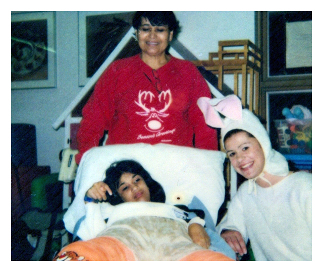

Meet PETTY and GETZABETH
-
Uncertainty
Petty gave birth to a baby Girl named Getzabeth in 1988, she soon was diagnosed with Cerebral Palsy (CP) at age 1. CP is one of the most common causes of chronic childhood disability. It affects 10K infants each year. Causes are still unknown but evidence supports problems during, and immediately after birth.
-
Commitment
Just like many parents, Petty became the main caregiver for her child. Family members are the main caregivers in most of the cases, they lack medical expertise and need to educate themselves about different types of therapies. Sometimes, they’re limited to immediate actions when an emergency situation arises. However, they put their heart and soul into this unpaid job.
-
Challenge
Thinking. Learning and Feeling.Understanding Getzabeth can be challenging. Since Getzabeth was diagnosed, Petty has been in charge of her constant therapies: Physical, Occupational and Speech therapies to improve Getzabeth’s quality of life. Petty has also learned how to act in case of an emergency. Yet, Petty feels she lacks medical training and that she can still learn more about therapies and how to improve them for Getzabeth’s well being.